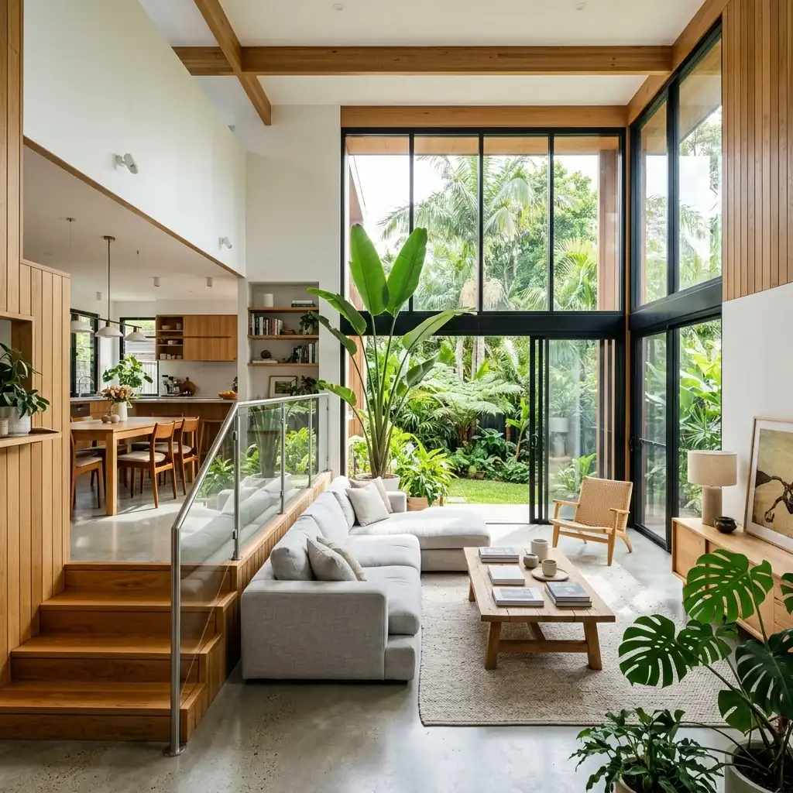

Ringkasan Inti
- Konsep split level memanfaatkan perbedaan ketinggian setengah lantai untuk menambah luas fungsi ruang secara vertikal.
- Sesuai untuk karakteristik lahan terbatas di kawasan padat permukiman Lowokwaru Malang.
- Menghasilkan sirkulasi udara dan pencahayaan alami yang lebih baik melalui void serta bukaan bertingkat.
- Perhitungan struktur tangga dan pondasi harus tercantum jelas dalam kelengkapan dokumen pengajuan PBG.
Daftar Isi Artikel
Desain rumah split level menjadi solusi cerdas di Lowokwaru Malang untuk memaksimalkan fungsi ruang pada lahan sempit tanpa membuat bangunan terasa sesak.
1. Apa Keuntungan Utama Menerapkan Konsep Split Level pada Lahan Sempit?
Membangun rumah di kawasan Lowokwaru Malang sering kali dihadapkan pada keterbatasan luas lahan. Konsep split level hadir sebagai jawaban arsitektural untuk menciptakan ilusi ruang yang lebih lapang dan terkoneksi secara visual.
Beberapa keuntungan utama rumah split level:
- Efisiensi lahan yang maksimal dengan memanfaatkan ketinggian lantai secara fleksibel tanpa perlu menambah jumlah lantai penuh.
- Alur sirkulasi antarraung yang dinamis dan terasa terbuka (open plan) karena minim sekat dinding masif.
- Memaksimalkan pencahayaan matahari dari area skylight atau void tengah hingga menyinari lantai bagian bawah.
- Fleksibilitas area bawah tangga atau perbedaan level untuk dijadikan ruang penyimpanan tersembunyi (hidden storage).

2. Bagaimana Cara Arsitek Mengoptimalkan Pencahayaan dan Sirkulasi Udara?
Sirkulasi udara dan pencahayaan alami merupakan kunci kenyamanan hunian di Malang yang beriklim tropis. Pada rumah split level, perbedaan ketinggian antar-area memfasilitasi aliran udara silang (cross ventilation).
Pendekatan perancangan yang diterapkan arsitek:
- Penempatan void di pusat bangunan yang berfungsi sebagai cerobong udara panas alami (stack effect).
- Penggunaan jendela kaca besar bertingkat pada sisi fasad maupun area taman dalam (inner courtyard).
- Pengurangan sekat dinding pembatas antara ruang tamu, ruang keluarga, dan area makan untuk melancarkan hembusan angin.
- Penerapan material ramah lingkungan seperti kisi-kisi kayu atau roster pada fasad depan untuk menyaring sinar matahari berlebih.
Catatan Arsitek Malang
Desain split level dengan void sentral mampu menghemat penggunaan listrik siang hari hingga 40% berkat pencahayaan alami skylight yang menembus setiap tingkatan lantai.
3. Apakah Rumah Split Level Memerlukan Perhitungan Struktur Khusus dalam PBG?
Meskipun secara visual tampak modern dan unik, konstruksi rumah split level membutuhkan perencanaan struktur pondasi dan kolom penopang yang presisi karena adanya distribusi beban bertingkat di titik-titik yang berbeda.
Hal teknis yang diperhatikan dalam pengurusan PBG di Kota Malang:
- Gambar kerja detail struktur balok, kolom, dan sambungan tangga split level.
- Perhitungan ketahanan struktur bangunan terhadap potensi getaran atau beban geser.
- Memastikan pemenuhan Koefisien Dasar Bangunan (KDB) dan Koefisien Daerah Hijau (KDH) sesuai regulasi tata ruang Pemkot Malang.
Bekerja sama dengan arsitek Malang bersertifikat IAI memastikan seluruh dokumen teknis rumah split level siap diverifikasi pada sistem SIMBG.
4. FAQ
Apakah biaya pembangunan rumah split level lebih mahal dari rumah konvensional?
Biaya sedikit lebih bervariasi pada pekerjaan struktur pondasi dan tangga bertingkat, tetapi sering kali lebih hemat pada penggunaan material dinding karena minim penyekatan masif.
Apakah rumah split level cocok untuk keluarga yang memiliki lansia?
Dapat disesuaikan dengan menempatkan kamar tidur utama lansia di lantai dasar (ground level) tanpa perlu menaiki banyak anak tangga.
Berapa ukuran lahan minimal yang ideal untuk konsep split level?
Konsep split level sangat fleksibel dan dapat diterapkan mulai dari lebar lahan 5–6 meter dengan panjang 10–12 meter.
5. Kesimpulan Praktis
Desain rumah split level minimalis merupakan solusi tepat bagi pemilik lahan sempit di Lowokwaru Malang yang menginginkan hunian fungsional, kaya pencahayaan alami, dan bernilai estetika tinggi. Perencanaan yang matang bersama arsitek profesional menjamin keamanan struktur serta kelancaran proses perizinan PBG.
Konsultasikan Desain Rumah Split Level Anda
Wujudkan hunian efisien di lahan sempit Lowokwaru Malang bersama tim arsitek berpengalaman Maroon Arsitek.

Muhammad Musyaffa
Penulis & Tim Riset Arsitektur Maroon Arsitek Malang, spesialis legalitas PBG/SIMBG, perencanaan tata ruang, dan estimasi biaya konstruksi.